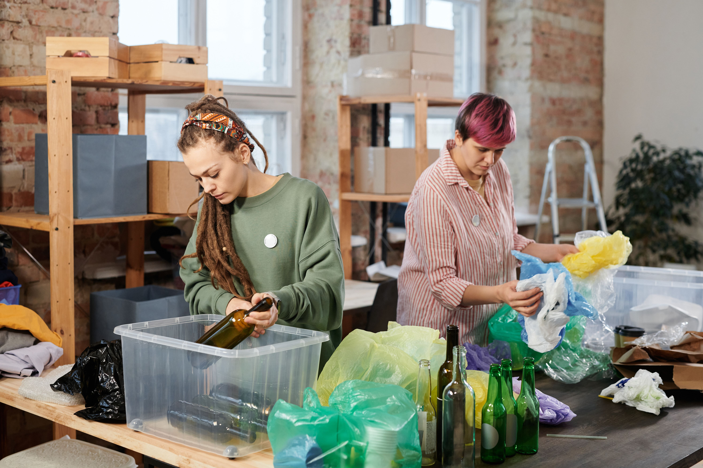

Welcome to our Recycle & Reuse page. Learn how to recycle everyday items and reduce waste. Small changes can help protect the environment.

Recycling is important because it helps reduce waste and protect the environment. It also helps save natural resources and reduce pollution.
Newspapers, magazines and cardboard boxes can usually be recycled. Keep them clean and dry.
Plastic bottles and containers can often be recycled. Make sure they are empty before recycling.
Glass bottles and jars can be recycled and used to make new glass products.
Drinks cans and food tins can be recycled and turned into new metal products.
Reusing means using something again instead of throwing it away.
Here are some simple recycling tips:
Reusing items helps reduce waste and save money. It also means we do not always have to buy new things.
Small changes can help the environment. For example, using reusable water bottles, repairing broken items and donating old clothes.
How much do you know about recycling? Try our quiz to test your knowledge.